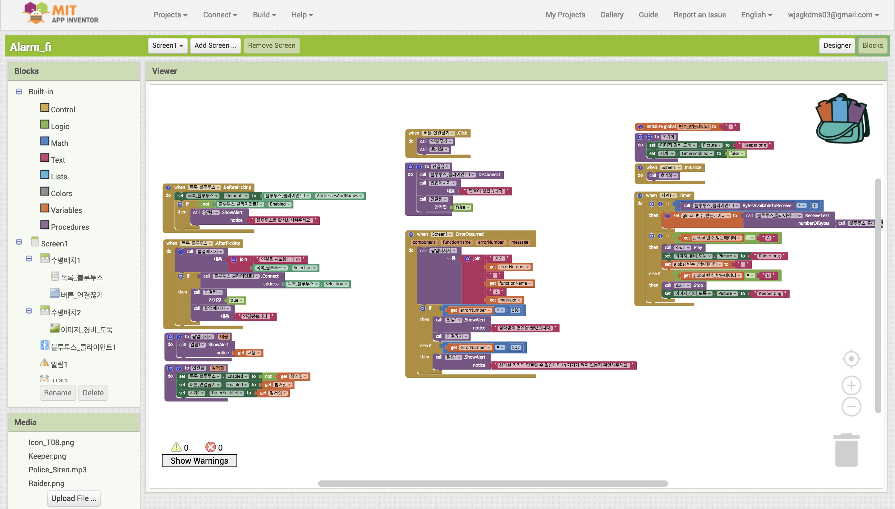
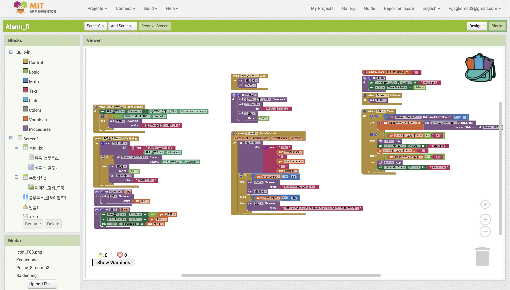

NT연구소 자율동아리
NT연구소 자율동아리는 정규동아리 학생들뿐 아니라 코딩에 대해 가볍게 익히고 싶은 학생들도 가입이 가능한 자율동아리입니다. 설립일 : 2017. 9. 1
엔트리나 앱인벤터를 사용하여 누구나 쉽고 재밌게 소프트웨어와 코딩에 대해 알아볼 수 있으며
이러한 블록코딩 프로그램이나 하드웨어에 익숙지 않은 학생들이 자신들의 디자인 작품을 손쉽게 제어할 수 있는
아두이노를 활용하여 더 즐겁게 코딩을 배울 수 있는 동아리입니다.
-엔트리, 앱인벤터 등 블록코딩 프로그램 사용
-위의 블록코딩 프로그램에 아두이노를 연결하여 사물인터넷과 같은 더 다양한 작품 제작 가능
-연말 개인 프로젝트 제작 예정
장소 : 과학실
담당선생님: 김은선 선생님(제 1교무실)
부장: 3-8 전하은
부원: 권수연, 권지희, 김민서, 김수린, 이윤서, 장은지, 정혜승, 조환희, 현서희
총 10명

 
